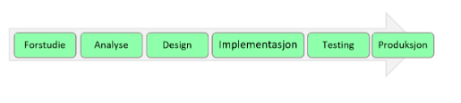

Læringsmål
Kjenne til viktige anvendelser av databasesystemer. (hva det er)
Kjenne til oppgavene et databasesystem har
Kjenne til hvordan et databasesystem blir utviklet
Forstå hovedprinsippene for digital representasjon av data
Hva er en database?
Database = en logsik samling av data** (opplysninger)
Det kan være en eller flere tabeller i en database
Eksempel: Et universitet har flere databaser. Hver database kan inneholde mange tabeller
Livsløpet til et databasesystem
Forstudie: Behov for nytt system?
Analyse: Hva skal systemet gjøre?
Design: Hvordan bør systemet bygges opp?
Implementasjon: Lag (programmer) systemet!
Testing: Virker systemet som forventet?
Produksjon: Ta systemet i bruk!

Bruksområder - eksempler
Handel: Varer, kunder, bestillinger, leveranser osv.
Bibliotek: Bøker, låntakere, lån
Bank: Kunder, kontoer, lån, innskudd, uttak, overføringer
Sykehus: Pasienter, journaler, medisiner, ansatte, turnus
Kart: Eiendommer, bygninger, veier
Kino: filmer, forestillinger
Forskning: Spørreundersøkelse, svar osv.
DIK(W)-pyramiden
Data - Information - Knowledge - (Wisdom)
Databaser lagrer store mengder informasjon som er nødvendige i daglig drift av virksomheten
Men databaser brukes også mer strategisk som grunnlag for beslutninger

%20pyramiden.png)